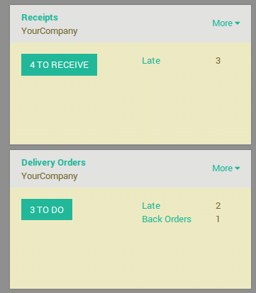

Overview
When an order goes to the shipping department for final delivery, Odoo is set up by default on a one-step operation: once all goods are available, they can be shipped in bulk in a single delivery order. However, that process may not reflect the reality and your company may require more steps before shipping.
With the three steps process (Pick + Pack + Ship), the items are transferred to a packing area, where they will be assembled by area of destination, and then set to outbound trucks for final delivery to the customers.
A few configuration steps are necessary in order to accomplish Pick +
Pack + Ship in Odoo. These steps create some additional locations, which
by default are called Output and Packing Zone. So, if your warehouse's
code is WH, this configuration will create a location called WH/Output
and another one called WH/Packing Zone.
Goods will move from WH/Stock to WH/Packing Zone in the first step. Then move from WH/Packing Zone to WH/Output. Then finally it will be delivered from WH/Output to its final destination.
Note
Check out How to choose the right inventory flow to handle delivery orders? to determine if this inventory flow is the correct method for your needs.
Configuration
Install the Inventory module
From the App menu, search and install the Inventory module.
You will also need to install the Sales module to be able to issue sales orders.
Allow managing routes
Odoo configures movement of delivery orders via routes. Routes provide a mechanism to link different actions together. In this case, we will link the picking step to the shipping step.
To allow management of routes, go to
Under , activate the radio button Advanced routing of products using rules. Make sure that the option Manage several locations per warehouse is activated as well.

Configure the warehouse for Pick + Pack + Ship
Go to and edit the warehouse that will be used.
For outgoing shippings, set the option to Make packages into a dedicated location, bring them to the output location for shipping (Pick + Pack + Ship).
Create a Sale Order
From the Sale module, create a sales order with some products to deliver.
Notice that we now see 3 transfers associated with this sales order
in the stat button above the sales order.

If you click the button, you should now see three different pickings:
- The first with a reference PICK to designate the picking process,
- The second one with the reference PACK that is the packing process,
- The last with a reference OUT to designate the shipping process.
Process a Delivery
How to Process the Picking Step?
Ensure that you have enough product in stock and Go to Inventory and click on the Waiting link under the Pick kanban card.

Click on the picking that you want to process.
Click on Reserve to reserve the products if they are available.
Click on Validate to complete the move from WH/Stock to WH/Packing Zone.
This has completed the picking Step and the WH/PICK should now show Done in the status column at the top of the page. The product has been moved from WH/Stock to WH/Packing Zone location, which makes the product available for the next step (Packing).
How to Process the Packing Step?
Go to Inventory and click on the # TRANSFERS link under the Pack kanban card.

Click on the picking that you want to process.
Click on Validate to complete the move from WH/Packing Zone to WH/Output.
This has completed the packing step and the WH/PACK should now show Done in the status column at the top of the page. The product has been moved from WH/Packing Zone to WH/Output location, which makes the product available for the next step (Shipping).
How to Process the Shipping Step?
Go to Inventory and click on the # TO DO link under the Delivery Orders kanban card.
Click on the picking that you want to process.
Click on Validate to complete the move from WH/Output to the customer (Click Apply to assign the quantities based on the quantities listed in the To Do column).
This has completed the shipping step and the WH/OUT should now show Done in the status column at the top of the page. The product has been shipped to the customer.